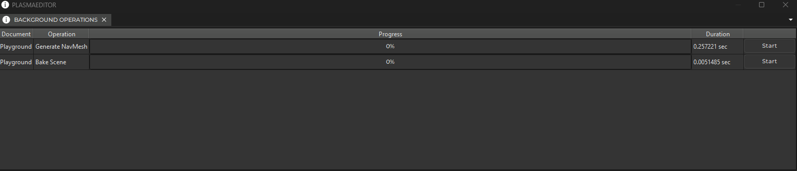

Editor Background Operations
Most data that takes time to be generated or converted, comes from assets. However, there is also scene specific data, which does not qualify as an asset. However, generating it can take very long and therefore should only be triggered on demand.
Examples include precomputed lighting or navmeshes. For complex scenes these processes can take very long. Also, if they become out of date, this is usually not a big problem immediately, which means updating the data can be delayed until it is really necessary.
Certain components expose background operations. Once you place such a component in a level, its background operation will show up in the Background Operations panel. You can find this under Panels > Background Operations:

This panel lists all background operations for all documents. Click Start to make one run in the background. Double click a row to jump directly to the corresponding component.
Important: Background operations are currently never run automatically, it is your responsibility to decide when to execute them.
Sharing Generated Data
The generated data is written to the project's AssetCache/Generated sub-folder. There it is typically ignored by git and thus won't show up for source control check-in. Therefore, either every user has to regenerate the data locally themselves, or you need to force add the desired files to git. Be aware that this type of data typically changes every time and a different storage solution, for example a shared folder on a network drive, may be a better solution. Currently there is no built-in option to change the location where this data is stored, so you would need to use Windows file junctions to redirect the folder or individual files to a different location.